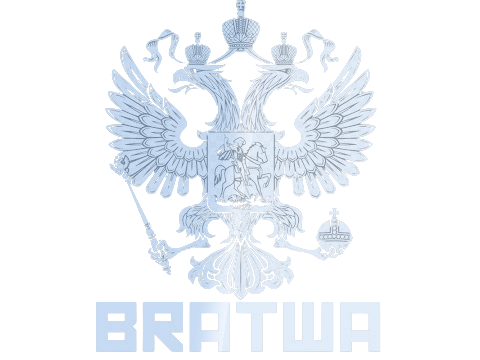

G E S C H Ä F T E
00:00:00
Monday
Febuary 5, 2024

| WAFFENHANDEL |
Das Kartell beliefert uns Tag täglich mit irgendwelchen schönen Langwaffen,
Doch warum sollten wir all dies nur für uns behalten?
Stattdesen haben wir uns zur Aufgaben genommen einiger unserer selbst gebauten und vom Kartell gelieferten Waffen an all die kleinkriminellen im Untergrund zu verkaufen.
| ÜBERFÄLLE |
Wir sind Diebe! Das ist nunmal unsere Natur. Ohne Raubüberfälle und Geiselnahmen würde all das was wir machen überhaupt keinen Sinn ergeben.
Wir müssen Kämpfen um etwas zu erreichen, klar einige verstehen das nicht aber andere wiederrum befinden sich genau in derselben lage.
Sie müssen eine Familie ernähren, schauen das sie einen Dach überm Kopf haben all dies ist nicht unbedingt einfach wenn man in Armut lebt.
Daher gehen wir öfter mal einen laden überfallen!
| DROGENHANDEL |
Die Treue der Kundschaft ist sehr Wichtig! Daher hat sich unser Gründer der Bratwa damals überlegt die Droge Routen an sich zu reißen und es an seiner Kundschaft weiter zu verkaufen.
Klar kommen die Drogen nicht von alleine, daher werde wir auch unsere Arbeiter dafür haben die uns täglich beliefern.